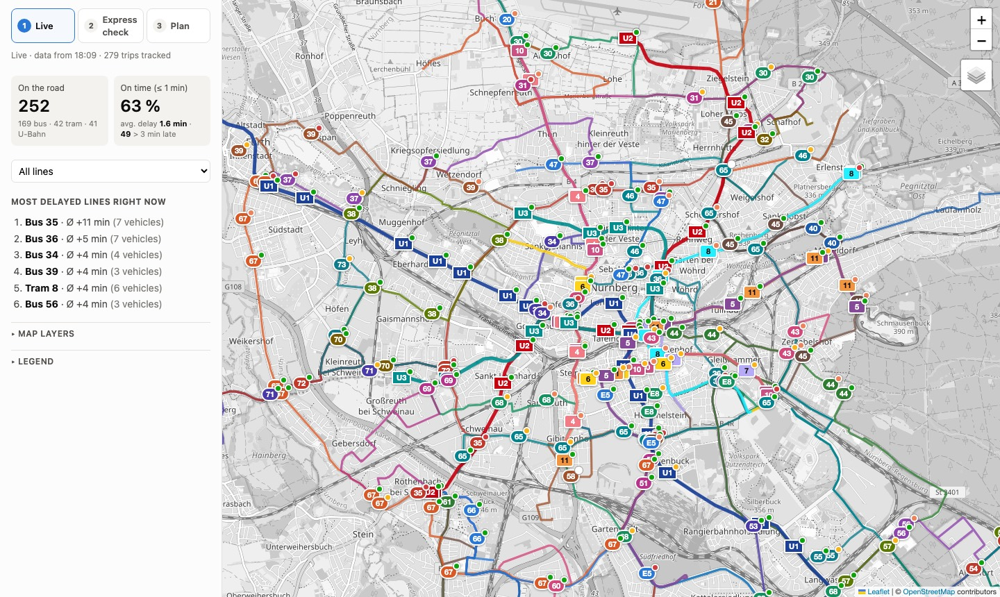
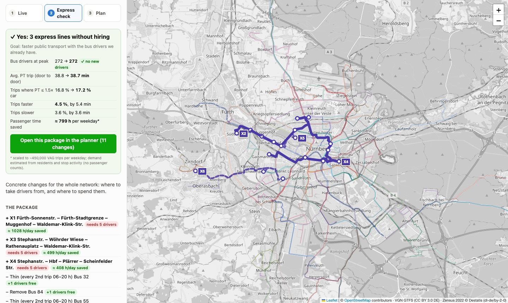
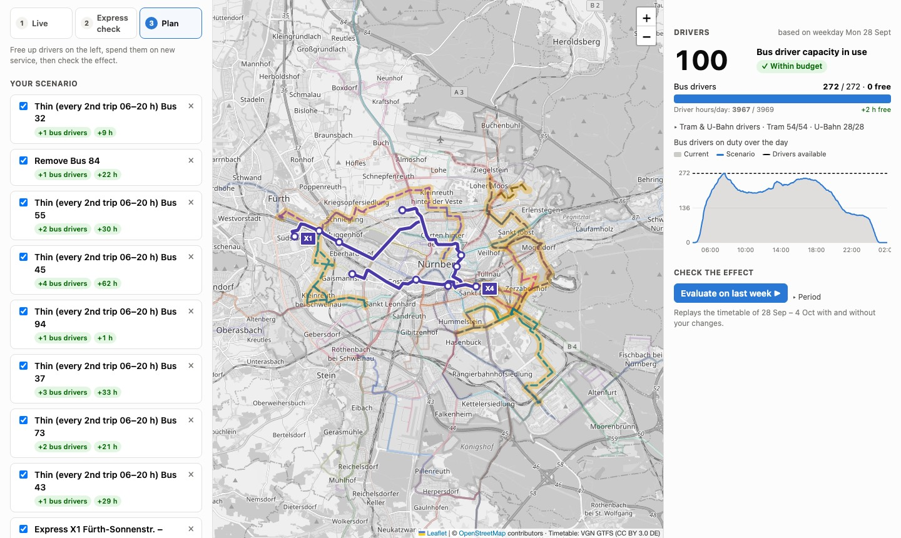

Express buses for Nuremberg, without hiring a single extra driver
Nuremberg has the buses for more express services, but not the drivers. This tool finds express lines worth running, and shows where to take the drivers from so that the total stays the same and passengers still come out ahead.
Model result for a weekday of the reference week 28 Sep – 4 Oct 2026. 3.6 % of trips get slower, by 3.6 min on average, because the drivers come from thinner bus service elsewhere. *Scaled to roughly 450,000 VAG trips per weekday. Demand is estimated, not counted (see limitations).
The problem
Too few drivers
Every extra bus on the road needs a driver at the same moment. The morning and afternoon peaks are the bottleneck, not total hours.
Slow cross-town trips
On a typical trip in Nuremberg, public transport takes about twice as long as the car door to door. Only one trip in six is competitive.
Uneven supply
The network is dense where U-Bahn and tram already run, and thin elsewhere. About 40 % of VAG bus capacity runs where rail already serves.
Who it's for
Network and service planners
Get concrete, costed express-line proposals and check any change (remove, thin, speed up, merge, add a line) against a full week of the real timetable.
Decision makers
See one answer, "can we do it with the drivers we have?", with the trade-off spelled out: who gains, who loses, and by how much.
What it does: three steps

1Live: what runs now
Every bus, tram and U-Bahn in Nuremberg on one map, moving along the streets in real time and coloured by delay. VAG's own live map shows only rail. Every finished trip is recorded, so delay data builds up over time.

2Express check: where it pays off
The tool searches the whole city for corridors where many people travel and public transport is much slower than the car. For each corridor it builds an express line that follows real streets and costs it in drivers. It then funds the lines from bus service that duplicates rail, choosing the cuts that hurt passengers least. The result is a single verdict and a ready-made package.

3Plan: try it yourself
Open the package in the planner, or build your own scenario. A game-like driver inventory updates instantly (100 % = today's drivers). One click replays last week's timetable with and without your changes and compares travel times, waits, delays and resources.
The proposed package
| Change | Where | Drivers | Passenger time / weekday |
|---|---|---|---|
| X1 new express | Fürth Sonnenstr. – Fürth Stadtgrenze – Muggenhof – Waldemar-Klink-Str. (7.6 km, ~18 min) | −5 | ≈ +1,030 h |
| X3 new express | Stephanstr. – Wöhrder Wiese – Rathenauplatz – Waldemar-Klink-Str. (5.8 km, ~15 min) | −5 | ≈ +500 h |
| X4 new express | Stephanstr. – Hbf – Plärrer – Scheinfelder Str. (7.1 km, ~17 min) | −5 | ≈ +410 h |
| Thin bus 32, 55, 45, 94, 37, 73, 43 | every 2nd trip 06–20 h, mostly where rail runs in parallel | +14 | ≈ −980 h |
| Remove bus 84 | 99 % of its capacity runs next to rail | +1 | ≈ 0 h |
| Net | ± 0 | ≈ +800 h |
Express lines run every 15 minutes, Mon–Fri 06–20 h. The individual effects don't add up exactly because changes interact; the net figure is measured on the combined package.
How it works
Driver model
The timetable doesn't say which bus does which trip, so trips are chained into vehicle rotations at their end stops (min. 5 min break). Each running vehicle needs one driver, and U2/U3 run without drivers. Budgets: drivers at peak and driver hours per day.
Journey planner
A connection-scan planner computes door-to-door times for all ~76,000 zone-to-zone relations: walk to the stop, wait, ride and transfer. Car times come from OSRM road routing plus time-of-day congestion and 5 min for parking.
Express lines
Each line starts and ends at the stops carrying most of the corridor's lost time and stops at up to two transfer hubs on the way. Its route comes from OSRM over real streets, and its timetable is computed from that same route.
Funding
Candidate cuts are bus lines that largely run where rail already serves. Each is scored by passenger time lost per driver freed, and the cheapest ones are used until the package is driver-neutral.
Limitations
- Demand is estimated from residents and stop activity, not from passenger counts. Jobs, schools and shops only enter indirectly. Real passenger or OD data would be the biggest improvement.
- Delays come only from the days the live data was recorded. Before that there is no history.
- Rotations are rebuilt heuristically, not taken from VAG's real duty schedules. Labour rules (breaks, split shifts) are not modelled.
- Express lines use fixed nominal settings: every 15 min, Mon–Fri 06–20 h, a 10 % bus penalty on car speed and 30 s per stop.
Run it
git clone https://github.com/leon-loeppert/nuremberg-express-bus cd nuremberg-express-bus python3 -m venv .venv && source .venv/bin/activate pip install -r requirements.txt && pip install -e . uvicorn app.livemap.server:app --port 8000 # open http://localhost:8000 (1 Live · 2 Express check · 3 Plan)